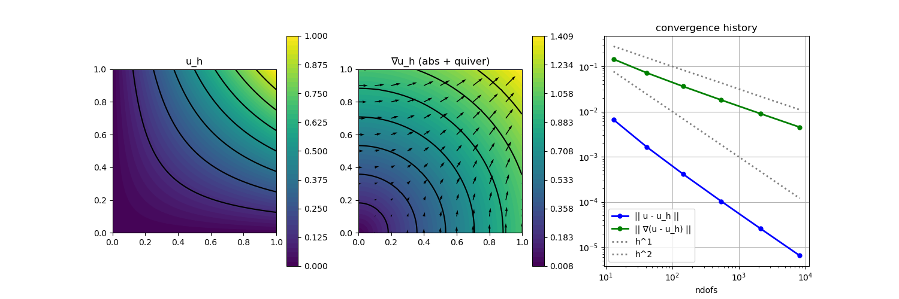

205 : Nonlinear Poisson Problem 2D
This example computes the solution $u$ of the nonlinear Poisson problem
\[\begin{aligned} -\mathrm{div}(\alpha(u,\nabla u) \nabla u) & = f \quad \text{in } \Omega \end{aligned}\]
with some right-hand side $f$ on a series of uniform refinements of the unit square $\Omega$. The quantity $\alpha$ makes the problem nonlinear and we consider the two possibilites
\[\begin{aligned} \alpha_1(u) &:= 1 + u^2\\ \alpha_2(\nabla u) &:= (\kappa + \lvert \nabla u \rvert)^{p-2} \end{aligned}\]
where the second one is known as the p-Laplacian (plus some small regularisation $\kappa \geq 0$ to make it solvable with the Newton solver).
This example demonstrates the automatic differentation feature and explains how to setup a nonlinear expression and how to assign it to the problem description. The setup is tested with some manufactured quadratic solution.
Also the factorization in the linear solver can be changed to anything <:ExtendableSparse.AbstractFactorization (but not every one will work in this example).
module Example205_NonlinearPoisson2D
using GradientRobustMultiPhysics
using ExtendableSparse
using ExtendableGrids
using GridVisualize
# all problem data is provided by the function below
# note that the right-hand side is computed automatically
# to match the data α, β, u
function get_problem_data(q; p::Float64 = 2.7, κ::Float64 = 0.0001)
function exact_u!(result,x)
result[1] = x[1]*x[2]
end
u = DataFunction(exact_u!, [1,2]; name = "u", dependencies = "X", bonus_quadorder = 4)
if q == 1
α = DataFunction((result, u) -> (
result[1] = (1+u[1]^2);
), [1,1]; Tv = Real, dependencies = "X", name = "1+u(x)^2")
elseif q == 2
α = DataFunction((result, ∇u) -> (
result[1] = (κ + ∇u[1]^2 + ∇u[2]^2)^((p-2)/2);
), [1,2]; Tv = Real, dependencies = "X", name = "(κ+|∇u|^2)^((p-2)/2)")
end
Δu = eval_Δ(u)
Hu = eval_H(u)
∇u = eval_∇(u)
∇α = eval_∇(α)
function rhs!(result, x) # computes -div(α(u)*grad(u)) = -(∇α ∇u + αΔu)
if q == 1
u_val = u(x)
∇u_val = ∇u(x)
result[1] = - dot(α(u_val), Δu(x)) - dot(∇α(u_val) * ∇u_val, ∇u_val)
elseif q == 2
∇u_val = ∇u(x)
∇α_val = ∇α(∇u_val)
Hu_val = Hu(x)
result[1] = -α(∇u_val)[1] * (Hu_val[1] + Hu_val[4]) - dot(Hu_val[1:2], ∇α_val) * ∇u_val[1] - dot(Hu_val[3:4], ∇α_val) * ∇u_val[2]
end
return nothing
end
function diffusion_kernel!(result, input)
if q == 1
# input[1,2:3] = [u, grad(u)]
α_val = α(input[1])
result[1] = α_val[1]*input[2]
result[2] = α_val[1]*input[3]
elseif q == 2
# input[1:2] = [grad(u)]
α_val = α(input)
result[1] = α_val[1]*input[1]
result[2] = α_val[1]*input[2]
end
return nothing
end
f = DataFunction(rhs!, [1,2]; name = "f", dependencies = "X", bonus_quadorder = 4)
return α, u, ∇(u), f, diffusion_kernel!
end
# everything is wrapped in a main function
# default argument trigger P1-FEM calculation, you might also want to try H1P2{1,2}
function main(;
q::Int = 1, # which nonlinear operator should be used?
p::Float64 = 2.7, # coefficient for diffusion kernel 2
κ::Float64 = 0.0001, # coefficient for diffusion kernel 2
nlevels = 6, # number of levels in refinement loop
FEType = H1P1{1}, # FEType to be used (H1P2{1,2} should give exact solution)
autodiff = false, # only for q = 1: use jacobians from automatic differentiation or the ones provided above? (q = 2 always uses autodiff)
Plotter = nothing,
verbosity = 0,
testmode = false,
factorization = ExtendableSparse.LUFactorization)
# set log level
set_verbosity(verbosity)
# choose initial mesh
xgrid = grid_unitsquare(Triangle2D)
# negotiate data functions to the package
α, u, ∇u, f, diffusion_kernel! = get_problem_data(q; p = p, κ = κ)
# prepare nonlinear expression (1+u^2)*grad(u)
if q == 1
nonlin_diffusion = NonlinearForm(Gradient, [Identity, Gradient], [1,1], diffusion_kernel!, [2,3]; name = "(1+u^2) ∇u ⋅ ∇v", bonus_quadorder = 2, sparse_jacobian = false)
elseif q == 2
nonlin_diffusion = NonlinearForm(Gradient, [Gradient], [1], diffusion_kernel!, [2,2]; name = "(κ+|∇u|^2) ∇u ⋅ ∇v", bonus_quadorder = 4, jacobian = "auto", sparse_jacobian = false)
else
@error "only q ∈ [1,2] !"
end
# generate problem description and assign nonlinear operator and data
Problem = PDEDescription("nonlinear Poisson problem")
add_unknown!(Problem; unknown_name = "u", equation_name = "nonlinear Poisson equation")
add_operator!(Problem, [1,1], nonlin_diffusion)
add_boundarydata!(Problem, 1, [1,2,3,4], BestapproxDirichletBoundary; data = u)
add_rhsdata!(Problem, 1, LinearForm(Identity, f; store = true))
@show Problem
# prepare error calculation
L2Error = L2ErrorIntegrator(u, Identity)
H1Error = L2ErrorIntegrator(∇u, Gradient)
NDofs = zeros(Int,nlevels)
Results = zeros(Float64,nlevels,2)
# loop over levels
Solution = nothing
for level = 1 : nlevels
# uniform mesh refinement
xgrid = uniform_refine(xgrid)
# create finite element space and solution vector
FES = FESpace{FEType}(xgrid)
Solution = FEVector{Float64}("u_h",FES)
# solve
@show Solution
GradientRobustMultiPhysics.solve!(Solution, Problem; linsolver = factorization, maxiterations = 10, show_statistics = true)
# calculate L2 and H1 error and save data
NDofs[level] = length(Solution.entries)
Results[level,1] = sqrt(evaluate(L2Error,Solution[1]))
Results[level,2] = sqrt(evaluate(H1Error,Solution[1]))
end
if testmode == true
return Results[end,2]
else
# plot
p = GridVisualizer(; Plotter = Plotter, layout = (1,3), clear = true, resolution = (1500,500))
scalarplot!(p[1,1], xgrid, nodevalues_view(Solution[1])[1], levels = 7, title = "u_h")
scalarplot!(p[1,2], xgrid, view(nodevalues(Solution[1], Gradient; abs = true),1,:), levels = 7, title = "∇u_h (abs + quiver)")
vectorplot!(p[1,2], xgrid, evaluate(PointEvaluator(Solution[1], Gradient)), spacing = 0.1, clear = false)
convergencehistory!(p[1,3], NDofs, Results; add_h_powers = [1,2], X_to_h = X -> X.^(-1/2), ylabels = ["|| u - u_h ||", "|| ∇(u - u_h) ||"])
# print/plot convergence history
print_convergencehistory(NDofs, Results; X_to_h = X -> X.^(-1/2), ylabels = ["|| u - u_h ||", "|| ∇(u - u_h) ||"])
end
end
# test function that is called by test unit
# tests if the above problem is solved exactly by P2-FEM
function test()
return main(; FEType = H1P2{1,2}, q = 1, nlevels = 1, testmode = true, autodiff = true) + main(; FEType = H1P2{1,2}, q = 1, nlevels = 1, testmode = true, autodiff = false)
end
endThis page was generated using Literate.jl.
Default output:
julia> Example205_NonlinearPoisson2D.main()
Problem =
PDE-DESCRIPTION
===============
system name = nonlinear Poisson problem
id | unknown name / equation name
[1] | u / nonlinear Poisson equation
LHS block | PDEOperator(s)
[1,1] | (1+u^2) ∇u ⋅ ∇v [AD-Newton] [∂u] (APT = NonlinearForm, AT = ON_CELLS, regions = [0])
RHS block | PDEOperator(s)
[1] | (f, id(v)) (APT = LinearForm, AT = ON_CELLS, regions = [0])
BoundaryOperator[1] : BestapproxDirichletBoundary -> [1, 2, 3, 4]
Solution =
FEVector information
====================
block | ndofs | name (FEType)
[ 1] | 13 | u_h (H1P1{1})
┌ Info: ========== Solving nonlinear Poisson problem ==========
└ Equation (1.1) nonlinear Poisson equation : u >> u_h (H1P1{1}, ndofs = 13)
ITERATION | LSRESIDUAL | NLRESIDUAL | TIME ASSEMBLY/SOLVE/TOTAL (s)
-----------------------------------------------------------------------
init | | 1.31e+01/2.80e-06/1.31e+01
1 | 1.269078e-16 | 1.879348e-01 | 3.32e-04/8.25e-05/3.59e-03
2 | 2.932914e-16 | 2.427676e-03 | 1.90e-04/6.30e-05/2.72e-04
3 | 5.452333e-16 | 3.580510e-07 | 1.73e-04/2.96e-05/2.18e-04
4 | 4.875561e-16 | 8.307288e-15 | 1.63e-04/2.33e-05/1.99e-04
total | | 1.31e+01/2.01e-04/1.31e+01
┌ Info: =================================== STATISTICS ===================================
│ op position | runtime (s) | last alloc | total alloc | op name
│ ----------------------------------------------------------------------------------
│ LHS[1,1][1] | 3.3422e+00 | 3.8912e+04 | 1.1506e+08 | (1+u^2) ∇u ⋅ ∇v [AD-Newton] [∂u]
└ RHS[1,][1] | 3.8160e+00 | 3.6876e+08 | 3.6876e+08 | (f, id(v))
Solution =
FEVector information
====================
block | ndofs | name (FEType)
[ 1] | 41 | u_h (H1P1{1})
┌ Info: ========== Solving nonlinear Poisson problem ==========
└ Equation (1.1) nonlinear Poisson equation : u >> u_h (H1P1{1}, ndofs = 41)
ITERATION | LSRESIDUAL | NLRESIDUAL | TIME ASSEMBLY/SOLVE/TOTAL (s)
-----------------------------------------------------------------------
init | | 6.86e-03/2.50e-06/6.96e-03
1 | 4.538003e-16 | 1.552235e-01 | 6.92e-04/1.52e-04/5.39e-03
2 | 1.771399e-15 | 1.898915e-03 | 6.12e-04/1.37e-04/7.81e-04
3 | 9.392505e-16 | 4.461316e-07 | 5.76e-04/7.40e-05/6.78e-04
4 | 1.074983e-15 | 2.566636e-14 | 5.40e-04/6.33e-05/6.28e-04
total | | 9.28e-03/4.29e-04/1.44e-02
┌ Info: =================================== STATISTICS ===================================
│ op position | runtime (s) | last alloc | total alloc | op name
│ ----------------------------------------------------------------------------------
│ LHS[1,1][1] | 3.1233e-03 | 1.5565e+05 | 8.0698e+05 | (1+u^2) ∇u ⋅ ∇v [AD-Newton] [∂u]
└ RHS[1,][1] | 4.9992e-03 | 1.7142e+06 | 1.7142e+06 | (f, id(v))
Solution =
FEVector information
====================
block | ndofs | name (FEType)
[ 1] | 145 | u_h (H1P1{1})
┌ Info: ========== Solving nonlinear Poisson problem ==========
└ Equation (1.1) nonlinear Poisson equation : u >> u_h (H1P1{1}, ndofs = 145)
ITERATION | LSRESIDUAL | NLRESIDUAL | TIME ASSEMBLY/SOLVE/TOTAL (s)
-----------------------------------------------------------------------
init | | 2.15e-02/2.20e-06/2.16e-02
1 | 1.454043e-15 | 9.834582e-02 | 2.19e-03/4.23e-04/2.67e-03
2 | 2.000258e-15 | 1.307935e-03 | 2.17e-03/4.88e-04/2.71e-03
3 | 1.800172e-15 | 4.214647e-07 | 2.29e-03/3.52e-04/2.69e-03
4 | 1.832130e-15 | 2.975164e-14 | 2.11e-03/3.17e-04/2.48e-03
total | | 3.02e-02/1.58e-03/3.21e-02
┌ Info: =================================== STATISTICS ===================================
│ op position | runtime (s) | last alloc | total alloc | op name
│ ----------------------------------------------------------------------------------
│ LHS[1,1][1] | 1.1105e-02 | 6.2259e+05 | 3.1966e+06 | (1+u^2) ∇u ⋅ ∇v [AD-Newton] [∂u]
└ RHS[1,][1] | 1.7911e-02 | 6.8567e+06 | 6.8567e+06 | (f, id(v))
Solution =
FEVector information
====================
block | ndofs | name (FEType)
[ 1] | 545 | u_h (H1P1{1})
┌ Info: ========== Solving nonlinear Poisson problem ==========
└ Equation (1.1) nonlinear Poisson equation : u >> u_h (H1P1{1}, ndofs = 545)
ITERATION | LSRESIDUAL | NLRESIDUAL | TIME ASSEMBLY/SOLVE/TOTAL (s)
-----------------------------------------------------------------------
init | | 8.18e-02/2.70e-06/8.19e-02
1 | 2.385672e-15 | 5.522608e-02 | 8.29e-03/1.51e-03/9.91e-03
2 | 4.012670e-15 | 8.487585e-04 | 8.20e-03/1.84e-03/1.01e-02
3 | 4.418612e-15 | 2.555420e-07 | 8.35e-03/1.37e-03/9.82e-03
4 | 4.874881e-15 | 2.241835e-14 | 8.36e-03/1.35e-03/9.82e-03
total | | 1.15e-01/6.07e-03/1.22e-01
┌ Info: =================================== STATISTICS ===================================
│ op position | runtime (s) | last alloc | total alloc | op name
│ ----------------------------------------------------------------------------------
│ LHS[1,1][1] | 4.1555e-02 | 2.5560e+06 | 1.2980e+07 | (1+u^2) ∇u ⋅ ∇v [AD-Newton] [∂u]
└ RHS[1,][1] | 7.1296e-02 | 2.7525e+07 | 2.7525e+07 | (f, id(v))
Solution =
FEVector information
====================
block | ndofs | name (FEType)
[ 1] | 2113 | u_h (H1P1{1})
┌ Info: ========== Solving nonlinear Poisson problem ==========
└ Equation (1.1) nonlinear Poisson equation : u >> u_h (H1P1{1}, ndofs = 2113)
ITERATION | LSRESIDUAL | NLRESIDUAL | TIME ASSEMBLY/SOLVE/TOTAL (s)
-----------------------------------------------------------------------
init | | 3.64e-01/2.90e-06/3.65e-01
1 | 4.826911e-15 | 2.924738e-02 | 3.80e-02/5.68e-03/4.39e-02
2 | 8.930795e-15 | 4.905172e-04 | 3.77e-02/6.72e-03/4.47e-02
3 | 9.459376e-15 | 1.346748e-07 | 3.79e-02/5.30e-03/4.34e-02
4 | 9.136723e-15 | 1.870131e-14 | 3.75e-02/5.34e-03/4.30e-02
total | | 5.16e-01/2.31e-02/5.40e-01
┌ Info: =================================== STATISTICS ===================================
│ op position | runtime (s) | last alloc | total alloc | op name
│ ----------------------------------------------------------------------------------
│ LHS[1,1][1] | 1.8670e-01 | 1.0420e+07 | 5.2630e+07 | (1+u^2) ∇u ⋅ ∇v [AD-Newton] [∂u]
└ RHS[1,][1] | 3.2467e-01 | 1.1040e+08 | 1.1040e+08 | (f, id(v))
Solution =
FEVector information
====================
block | ndofs | name (FEType)
[ 1] | 8321 | u_h (H1P1{1})
┌ Info: ========== Solving nonlinear Poisson problem ==========
└ Equation (1.1) nonlinear Poisson equation : u >> u_h (H1P1{1}, ndofs = 8321)
ITERATION | LSRESIDUAL | NLRESIDUAL | TIME ASSEMBLY/SOLVE/TOTAL (s)
-----------------------------------------------------------------------
init | | 1.50e+00/2.70e-06/1.50e+00
1 | 9.825249e-15 | 1.504798e-02 | 1.34e-01/2.42e-02/1.59e-01
2 | 1.870276e-14 | 2.640269e-04 | 1.44e-01/3.38e-02/1.78e-01
3 | 1.891759e-14 | 6.824838e-08 | 1.49e-01/2.47e-02/1.75e-01
4 | 1.899852e-14 | 3.274168e-14 | 1.30e-01/6.52e-02/1.96e-01
total | | 2.06e+00/1.48e-01/2.21e+00
┌ Info: =================================== STATISTICS ===================================
│ op position | runtime (s) | last alloc | total alloc | op name
│ ----------------------------------------------------------------------------------
│ LHS[1,1][1] | 7.0872e-01 | 4.1878e+07 | 2.1149e+08 | (1+u^2) ∇u ⋅ ∇v [AD-Newton] [∂u]
└ RHS[1,][1] | 1.3007e+00 | 4.4188e+08 | 4.4188e+08 | (f, id(v))
ndofs | || u - u_h || order | || ∇(u - u_h) || order |
============|==========================|==========================|
13 | 6.623e-03 0.00 | 1.444e-01 0.00 |
41 | 1.658e-03 2.41 | 7.217e-02 1.21 |
145 | 4.147e-04 2.19 | 3.609e-02 1.10 |
545 | 1.037e-04 2.09 | 1.804e-02 1.05 |
2113 | 2.592e-05 2.05 | 9.021e-03 1.02 |
8321 | 6.481e-06 2.02 | 4.511e-03 1.01 |